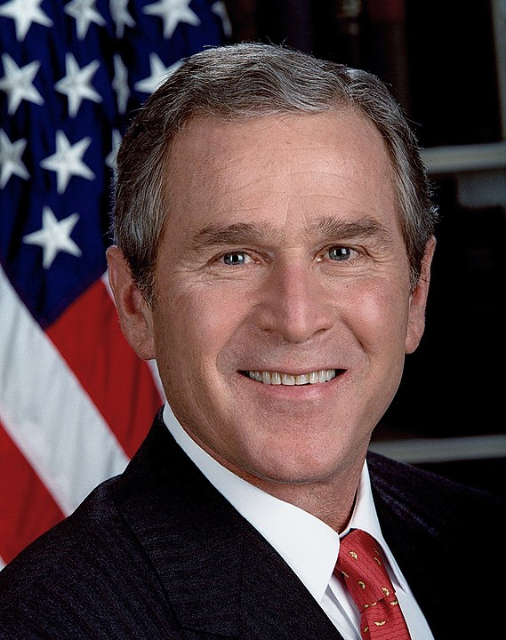
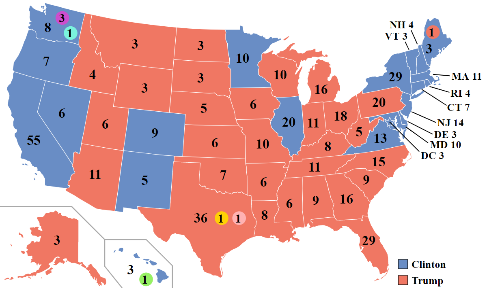
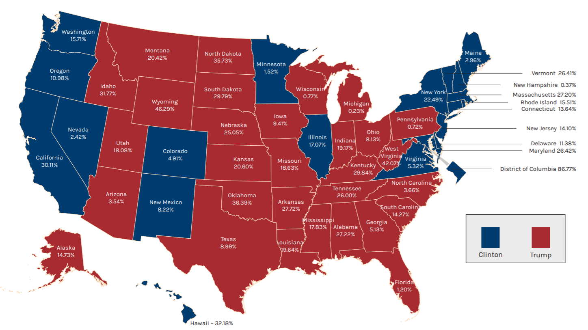
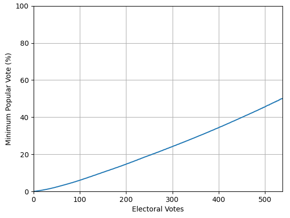
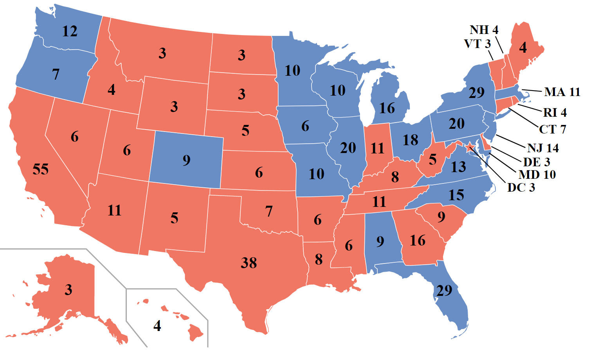

Autofill Title
| Candidate | George Bush | Al Gore |
|---|---|---|
 |
||
| Electoral Vote | 271 (50.4%) | 266 (49.4%) |
| Popular Vote | 50,456,002 (47.9%) | 50,999,897 (48.4%) |
| Candidate | Donald Trump | Hillary Clinton |
|---|---|---|
| Electoral Vote | 304 (56.5%) | 227 (42.2%) |
| Popular Vote | 62,984,828 (46.1%) | 65,853,514 (48.2%) |
As most North Americans are familiar with, the United States decides its president based on elections held every four years, where the citizens vote on their favorite candidate. This is a fundamental value of the United States; each individual has a role in deciding the country's next leader. So, should this mean that the candidate with the highest number of votes wins the election? Well, usually, but this may not always be the case. Above, you will see the two elections in the past 100 years where the person with the most votes loses the election. In the entirety of U.S. history, this has only happened 5 times out of the 59 elections (8.5%) held up to 2020: in 1824, 1876, 1888, 2000, and 2016.
Taking a look at the 2000 presidential election, the race was very close, with George Bush barely passing the required 270 electoral votes to be elected president. Although his opponent, Al Gore, won the popular vote, it was not by a significant amount, and the electoral votes approximately matched with the popular vote. The main subject of interest is the 2016 presidential election. Here, Donald Trump loses to Hillary Clinton in the popular vote by 2%, but wins by 14% in electoral votes. This begs the question, what is the main cause for such a huge disparity between electoral and popular votes in the 2016 presidential election? In order to answer this question, we must first understand how the Electoral College system works.
Electoral College


In the United States, citizens vote indirectly for a president through a group of electors, which is why the country is called a federal republic and a representative democracy. Here is how the 538 electoral votes are assigned:
- 100 electoral votes are given for the 100 senators. Each state has 2 senators.
- 435 electoral votes are given for the 435 representatives, which are distributed to states according to their population.
- 3 electoral votes are given to the District of Columbia. They are entitled to the same number of electoral votes as the least populous state.
Since each state is given 2 senators regardless of their population, these two electoral votes will have a higher impact on states with smaller populations, and hence they will have a higher ratio of electoral votes to people. For example, in 2016, the most populous state, California, has one electoral vote per 677,000 people, while the least populous state, Wyoming, has one electoral vote per 193,000 people. This means that a vote in Wyoming has more than 3 times the value of a vote in California.
The main reason why one can win with the minority of votes is the winner-takes-all system in the Electoral College. In 48 out of the 50 states, the person with the plurality of votes, no matter how close the margin, receives all of its electoral votes. The map to the top-left shows which states favored Trump (red) and which states favored Clinton (blue). This can be deceiving, as states are colored completely red or blue, no matter if the state is won by a 1% or a 100% margin. This can be used to explain Trump's victory. The four largest states that Trump won (103 electoral votes), Texas, Florida, Pennsylvania, and Ohio, have 8.99%, 1.20%, 0.72%, and 8.13% margins respectively. In contrast, the three largest states that Clinton won (104 electoral votes), California, New York, Illinois, have 30.11%, 22.49%, and 17.07% margins respectively, significantly higher. Since higher winning margins does not make a difference, Clinton had many more votes that could be considered "wasted".
There are two exceptions to the winner-takes-all system: Maine and Nebraska. Here, the state is split into several congressional districts equal to the number of representatives (2 in Maine and 3 in Nebraska). For each congressional district, the winner gets 1 electoral vote, and the winner of the entire state gets an additional 2 electoral votes (for the senators). This gives the potential for votes to be split between candidates. In fact, in 2016, Maine split its vote for the first time, giving 3 to Clinton and 1 to Trump. Trump and Clinton each won one district, but since Clinton won the majority of votes in the entire state, she gets an additional 2 electoral votes. There is also the possibility of faithless electors, where electors pledge their votes against what the state voted for. Since these exceptions (along with third parties) are not very influential in elections, they will be ignored in the next section.
Statistics


Now that it is established that it is possible to win with a minority of votes, the next question to ask is, what is the minimum percentage of the popular vote required to win the election? What about the minimum percentage required to obtain 300, 400, or 500 electoral votes? This problem can be solved using dynamic programming with a computer. The details are not important, but here is roughly how it is computed: a function \(f(a, b)\) is defined as the minimum percentage of the popular vote required to achieve \(a\) electoral votes from the first \(b\) states (here we include D.C.). All values of \(f(a, b)\) can be calculated using a recursive formula, and the values of importance are \(f(a, 51)\), when all the states are considered. The assumptions are that every state uses the winner-takes-all system, everyone votes for one of two parties, and the number of voters per state is equal to the data in the 2016 election.
This computation reveals it is possible to win the 2016 election with 21.3% of the popular vote by winning 270 electoral votes. The minimum requirement to achieve Trump's 304 electoral votes is 24.6% of the popular vote. In the graph to the top-left, on the x-axis is the number of desired electoral votes, and on the y-axis is the minimum percentage of the popular vote required. This graph will always pass through the point (0, 0), and will pass through a point slightly above (538, 50) because one needs just over 50% of the votes in every state to win all of the electoral votes. This graph curves upward slightly, as the first few electoral votes are very easy to get since small states have disproportionately more electoral votes compared to their population size. The map on the top-right shows the winning combination of states in red. To achieve the minimum number of popular votes, the winner has half of the votes plus one in the winning states. In the blue losing states, the winner has zero votes. In the winning combination, there are mostly small states due to a high ratio of electoral votes to population, however, some big states (for instance, California) appear due to low voter turnouts.
{kind=link}